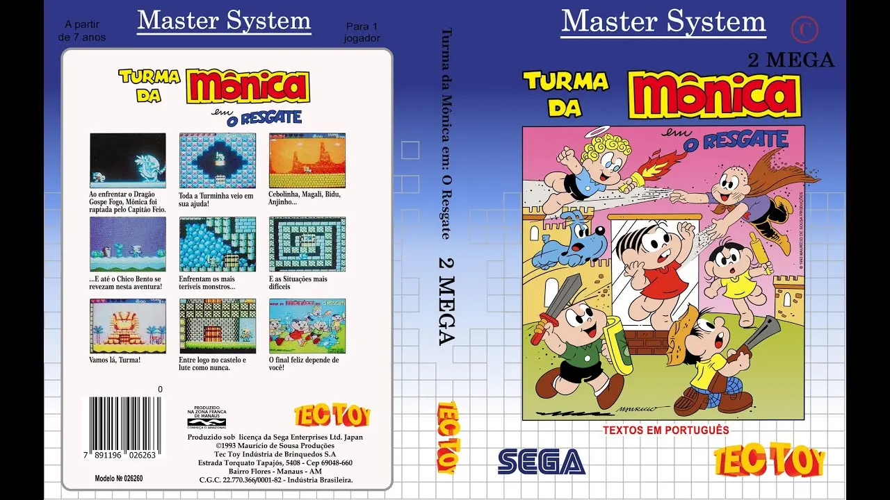

Turma da Mônica: O Resgate
Master System
Desenvolvedora: Westone / Tec Toy
Editora: Tec Toy
Lançamento: 1993
Gênero: Aventura / Plataforma
Modos de Jogo: Single-player
Um dos maiores orgulhos da localização brasileira. Uma modificação oficial do clássico Wonder Boy III: The Dragon's Trap, este jogo é tecnicamente impressionante para 8-bits e traz os personagens de Mauricio de Sousa em uma aventura épica.
📜 A História
A Mônica foi sequestrada pelo Capitão Feio! Para salvá-la, a turma precisa se unir. O jogo começa com Chico Bento e, conforme você derrota os dragões chefes, libera os outros amigos (Cebolinha, Magali, Anjinho e Bidu), cada um necessário para acessar novas áreas do mapa.
🎮 Destaques e Jogabilidade
- Exploração Não-Linear: Um precursor do estilo "Metroidvania", onde você deve revisitar áreas antigas com novos personagens para descobrir segredos.
- Habilidades Únicas: Cebolinha voa alto, Magali morde blocos do cenário, Bidu passa por lugares baixos e Anjinho voa livremente.
- Gráficos: Visuais coloridos e vibrantes que exploram o máximo da capacidade do Master System.
✨ Fator Replay
A complexidade do mapa e a necessidade de descobrir qual personagem usar em cada momento tornam a exploração recompensadora. Encontrar todas as lojas secretas e itens lendários garante horas de diversão.
Meu Código (Save)

Capa Completa do Jogo
Manual Original do Jogo
Aqui